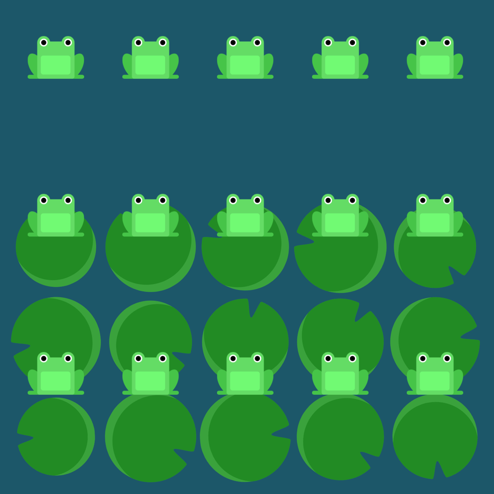

Retrospectiva
1º semestre
Eduarda Masson Costa
APRENDIZADO
Neste semestre, desvendei mais sobre o mundo da tecnologia e estudei a respeito de diversos temas e conceitos. Aprendi sobre a Linguagem da Programação e tudo aquilo que está por trás dela, com diversos códigos por meio de programas como o Python, o Pycharm, o Colab, entre outros. Ademais, adquiri conhecimento na área de Front-End e Back-End, realizando comandos no CMD, Análise de Requisitos, criação de sites, incluindo HTML e CSS, etc. Realizei também, programações de um Semáforo Inteligente e sites veterinários como o Dog Dodói. Além disso, por meio das peças de um computador, aprendi a função de cada um deles e como funcionam juntos.
MELHORES MOMENTOS ---------------------------------------------------------------------------
CRIAÇÃO DE SITES
JOGO DO SAPINHO
DESMONTANDO COMPUTADORES
BRINCADEIRA DO AVIÃO DE PAPEL
MEU FUTURO
ANTES
Antes de ingressar no curso técnico, o meu desejo era estudar algo relacionado à área da saúde. Como não tinha tanto conhecimento na área de Desenvolvimento de Sistemas, não conhecia os benefícios que ela poderia me proporcionar.
DEPOIS
Depois do primeiro semestre de curso, pude perceber que existem inúmeras áreas no âmbito da tecnologia. O curso fez com que eu abrisse novos horizontes e criar uma nova visão sobre isso. Ainda possuo o desejo de um futuro relacionado à área da saúde, contudo, com o Desenvolvimento de Sistemas atrelado a ele, visto que ambos estão interligados. Agora, estou disposta a aprender mais sobre essa área e aperfeiçoar meus conhecimentos para utilizá-los no futuro.